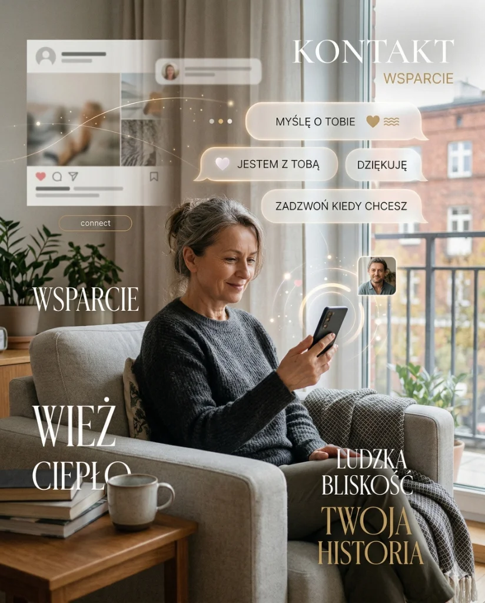
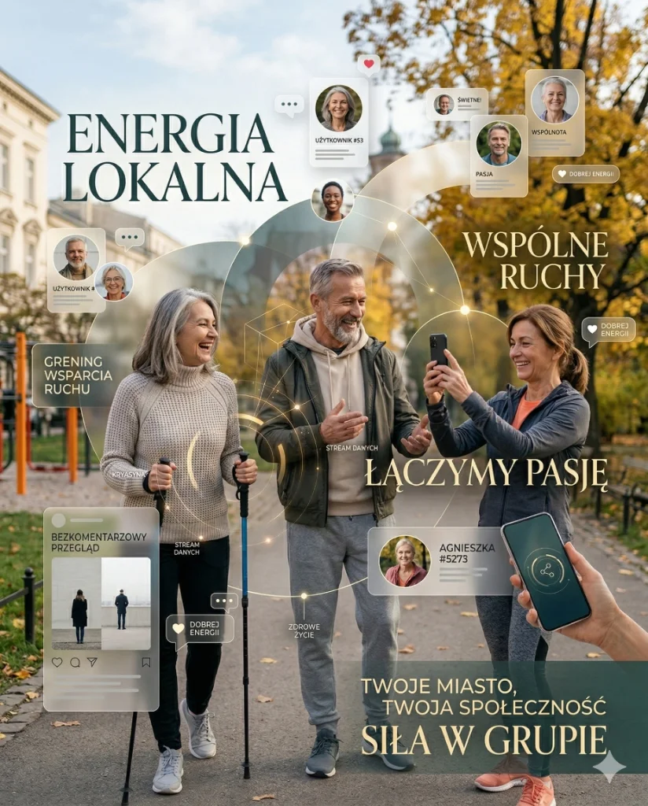

Pewnie masz kogoś w rodzinie albo znajomego, który mówi: te media społecznościowe to dla młodych, ja w to nie wchodzę, nie potrzebuję. I może ma rację, że nie potrzebuje. Ale może też traci coś, o czym nie wie. Bo nauka mówi, że dla osób po 50-tce media społecznościowe mogą być jednym z najlepszych narzędzi do zdrowego i ciekawszego życia. Serio.
Kluczowe wnioski
- Najważniejsze: Pewnie masz kogoś w rodzinie albo znajomego, który mówi: te media społecznościowe to dla młodych, ja w to nie wchodzę, nie potrzebuję.
- W artykule znajdziesz konkrety o: Zacznijmy od mitu, który krąży najczęściej.
- Drugi kluczowy temat: Co nauka mówi o starszych dorosłych i mediach społecznościowych.
Zacznijmy od mitu, który krąży najczęściej
Wiem co myślisz. Media społecznościowe to miejsce, gdzie ludzie pokazują co zjedli na obiad, kłócą się o politykę i wrzucają zdjęcia wakacji. Po co mi to?
I tu jest sedno sprawy, którego większość osób nie rozumie zanim spróbuje: media społecznościowe to nie jedno miejsce z jednym typem treści. To potężne wyszukiwarki wiedzy i rozrywki, które możesz dosłownie zaprogramować pod siebie. Nie musisz widzieć nic czego nie chcesz. Dosłownie.
Co nauka mówi o starszych dorosłych i mediach społecznościowych
Zanim przejdziemy do konkretów — jedno ważne zdanie. Były prowadzone dziesiątki badań naukowych na temat tego jak media społecznościowe wpływają na starszych dorosłych. Systematyczny przegląd aż 64 badań powiedział co następuje:
„Korzystanie z mediów społecznościowych jest powiązane z konkretnymi korzyściami dla starszych dorosłych: lepsza kondycja poznawcza, niższe poczucie samotności i depresji, lepsza łączność społeczna oraz wyższa jakość życia. Przegląd obejmował 64 badania, w tym 9 interwencyjnych (randomizowanych).”
Źródło: The relationship between social media use and psychosocial outcomes in older adults: A systematic review. International Psychogeriatrics. 2025.64 badania naukowe. Niejedna opinia. Niejedna strona internetowa. 64 niezależne prace naukowe które patrzyły jak media społecznościowe działają na ludzi w Twoim wieku. I wychodzi z tego jeden łączny wniosek: to działa. Przy rozsądnym użytkowaniu.
Samotność po 50-tce to nie kaprys — to epidemia z konsekwencjami zdrowotnymi
Tutaj muszę powiedzieć coś ważnego. Samotność po 50-tce, a szczególnie po przejściu na emeryturę, jest jednym z poważniejszych problemów zdrowotnych współczesnych społeczeństw. WHO ogłosiła ją w 2023 roku kryzysem zdrowia publicznego.
I tutaj media społecznościowe mają realną rolę do odegrania. Nie jako zastępstwo kontaktu face-to-face, ale jako jego uzupełnienie. Mostek, który działa, kiedy wyjście jest trudne, kiedy rodzina daleko, kiedy znajomi są zajęci.
Źródło: Social Media Communication and Loneliness Among Older Adults: The Mediating Roles of Social Support and Social Contact. PubMed 33284972.
Media społecznościowe a mózg — to się opłaca
To jest ten argument, który przekonuje mnie najbardziej. I który jest najmniej oczywisty.
Korzystanie z mediów społecznościowych to dla mózgu ćwiczenie. Naprawdę. Uczysz się nowych platform, nawigujesz interfejsy, piszesz, czytasz, komentujesz, reagujesz. To są aktywności kognitywne. I mają mierzalny efekt na kondycję umysłową.
Źródło: Internet-Based Social Activities and Cognitive Functioning... JMIR Aging 2024.
Uczenie się nowej aplikacji lub platformy społecznościowej aktywuje te same obszary mózgu co nauka języka obcego lub gra na instrumencie. Nowość i wyzwanie poznawcze są kluczowymi stymulantami wzrostu neuroplastyczności. Każdy raz, kiedy uczysz się obsługi nowej technologii — dosłownie budujesz nowe połączenia w mózgu.
Nie musisz nic o sobie pisać. Serio.
To jest chyba najczęstszy powód rezygnacji. Nie chcę ujawniać swojego życia. Nie chcę żeby wszyscy wiedzieli co robię. Nie chcę odpisywać ludziom.
I to jest całkowicie uzasadnione. I całkowicie niekonieczne. Pozwól, że wyjaśnię:
- Możesz założyć konto z pseudonimem. Instagram, Facebook i TikTok nie wymagają podania prawdziwego nazwiska ani żadnych danych osobowych poza adresem e-mail.
- Możesz mieć konto prywatne, które nie jest widoczne dla nikogo. Obserwujesz innych, ale nikt Ciebie nie obserwuje bez Twojej zgody.
- Nie musisz nic publikować. Możesz być wyłącznie obserwatorem. To się nazywa „ciche konto” — i większość ludzi tak zaczyna.
- Nie musisz odpisywać. Polubienie i przejście dalej są absolutnie akceptowalne.
- Możesz wyciszać, usuwać, blokować każdą osobę i każdy temat który Ci przeszkadza. Masz pełną kontrolę.
Załóż konto na Instagramie. Daj mu pseudonim lub imię. Ustaw na prywatne. Szukaj kont o tym co Cię interesuje: fitness, zdrowie, podróże, historia, gotowanie, fotografia. Obserwuj. Patrz. Nie musisz nic pisać. Po miesiącu algorytm będzie dokładnie wiedział co chcesz widzieć.

Bezpieczeństwo — co tak naprawdę warto wiedzieć
Obawy o bezpieczeństwo są uzasadnione. Ale większość z nich wynika z nieznajomości tego jak te platformy działają. Kilka prostych zasad — i ryzyko spada do poziomu porównywalnego z używaniem e-maila.
Zasady, które chronią skutecznie
- Nie dodawaj do kontaktów i nie akceptuj zaproszeń od osób których nie znasz. Jeśli konto wygląda podejrzanie (nowe, bez zdjęć, pierwsza wiadomość to prośba o pieniądze) — ignoruj i zablokuj.
- Nigdy nie klikaj linków w prywatnych wiadomościach od osób których nie znasz.
- Nigdy nie podawaj hasła, numerów kart, PESEL czy kodu bankowego. Prawdziwe platformy nigdy o to nie proszą.
- Ustaw dwuetapową weryfikację logowania (2FA) — każda platforma to oferuje za darmo. To jeden krok który chroni Twoje konto skuteczniej niż jakiekolwiek hasło.
- Nie używaj tego samego hasła co do banku czy e-maila.
Prawdziwe konta mają historię postów, zróżnicowane zdjęcia i reagują naturalnie. Kłamliwe konta mają bardzo mało postów, foto z różnych miejsc lub zdjęcia zbyt piękne by były prawdziwe. I niemal zawsze wiadomość pierwsza to prośba o pomoc finansową, link do strony lub zaproszenie do prywatnej rozmowy poza platformą. Ignoruj i blokuj.
Co konkretnie możesz tam znaleźć — tabela platform
| Platforma | Co tu znajdziesz | Szczególnie dobre dla |
|---|---|---|
| Grupy tematyczne (fitness, hobby, regionalne), kontakt z rodziną za granicą, wydarzenia lokalne, artykuły, humor. Najlepszy do znajomych i grup. | Utrzymania relacji, grup zainteresowań, wiadomości lokalnych. | |
| Zdjęcia, konta o zdrowiu, fitnessie, podróżach, sztuce, naturze. Mniej tekstu, więcej estetyki. Świetny do inspiracji wizualnych. | Motywacji do aktywności, inspiracji, śledzenia tematów. | |
| TikTok | Krótkie filmy o WSZYSTKIM — zdrowie, ćwiczenia, gotowanie, historia, nauka, humor. Algorytm TikToka jest najlepszy na świecie w dopasowywaniu treści. | Edukacji w przystępnej formie, zabawy, odkrywania nowych tematów. |
| YouTube | Dłuższe filmy instruktarzowe, dokumenty, wykłady, poradniki. Technicznie to nie media społecznościowe, ale działa podobnie. | Nauki, medycyny, fitnessu, podróży, dokumentalnych. |
TikTok po 50-tce — ale skąd wiem co tam jest?
TikTok ma opinię platformy dla nastolatków tańczących przy głośnej muzyce. I tak — to jest część TikToka. Ale jest też cały inny TikTok.
FitTok, MedTok, ScienceTok, HistoryTok, CookingTok — to są nieformalne nazwy społeczności wewnątrz TikToka, gdzie lekarze wyjaśniają choroby, dietetycy obalają mity, fizycy tłumaczą kwantową mechanikę w 60 sekund, szefowie kuchni pokazują przepisy a historycy opowiadają jak ludzie spędzali święta 100 lat temu.
Hashtag #LearnOnTikTok (ucz się na TikToku) ma ponad 1,3 biliona wyświetleń. Hashtag #Over50 i #FitOver50 mają setki milionów wyświetleń. Istnieją konta prowadzone przez 70- i 80-latków które mają miliony obserwujących właśnie dlatego, że mówią do rówieśników ich językiem i o ich problemach.
Algorytm TikToka jest dosłownie zaprojektowany tak żeby pokazywać Ci dokładnie to co chcesz zobaczyć. Jeśli zatrzymasz się na filmiku o zdrowiu — dostaniesz więcej o zdrowiu. Jeśli przesuniesz taniec — taniec zniknie. To nie jest magia. To matematyka. I ona działa na Twoją korzyść.

Grupy na Facebooku — jak znaleźć swoje plemię
Jedną z najbardziej niedocenianych funkcji Facebooka są grupy tematyczne. To zamknięte lub otwarte społeczności skupione wokół jednego tematu. Fitness po 50-tce. Bieganie seniorskie. Miłośnicy Nordic Walking. Zdrowe gotowanie. Ogrodnicy. Podróżnicy po Azji. Fotografowie amatorzy. Ludzie, którzy przetrwali rak. Ludzie, którzy budują domki na drzewach.
W każdej z tych grup są tysiące ludzi, którzy mają to samo zainteresowanie co Ty. I którzy odpowiadają na pytania, dzielą się doświadczeniami i kibicują sobie nawzajem. Tego nie znajdziesz w kawiarni ani na siłowni.
Źródło: The relationships between social internet use, social contact, and loneliness in older adults. Nature 2025.
Obalamy mity
| MIT | FAKT |
|---|---|
| To jest dla młodych. Nie dla mnie. | Badania pokazują, że dla starszych dorosłych media społecznościowe przynoszą większe korzyści zdrowotne niż dla młodszych. Samotność po 50-tce to poważny problem zdrowotny. Kontakt cyfrowy go częściowo rozwiązuje. |
| Muszę wszystko o sobie ujawniać. | Absolutnie nie. Możesz mieć pseudonim, konto prywatne, nie publikować nic i być wyłącznie odbiorcą. Platformy nie wymagają prawdziwych danych poza mailem. |
| To niebezpieczne, będą kraść moje dane. | Dane osobowe są zagrożone wszędzie. Karta bankomatowa jest bardziej ryzykowna niż profil na Instagramie przy odpowiednich ustawieniach. 2FA + nieujawnianie hasła = poziom bezpieczeństwa większy niż przy mailach. |
| Tam są tylko głupoty i kłótnie. | To jak powiedzieć, że w telewizji są tylko reklamy. Są i głupoty, i wartościowa treść. TikTok z edukacją zdrowotną, Facebookowe grupy wsparcia, instagramowe wykłady o historii — to istnieje. Trzeba tylko wiedzieć jak szukać. |
| To uzależnia i sprawia, że się gorzej czujemy. | U osób po 50-tce wyniki są odwrotne niż u nastolatków. U starszych dorosłych media społecznościowe redukują depresję i samotność. Problem uzależnienia dotyczy głównie młodszych grup wiekowych. |
| Jak się nie znam na technologii, to się nie nadaję. | Interfejsy Facebooka, Instagrama i TikToka są zaprojektowane tak żeby były proste. Jeśli potrafisz obsłużyć smartphone i wysyłać SMS-y — poradzisz sobie. Nauka trwa kilka dni. Po tygodniu jest naturalne. |
Na koniec — bo to jest najważniejsze
Nie mówię, że masz spędzać na Instagramie 4 godziny dziennie. Mówię, że 20–30 minut z dobrą treścią, którą sam/a wybrałeś — to jest rozrywka, edukacja i kontakt społeczny w jednym. Tyle samo, ile sprzątasz kuchnię. I z lepszymi skutkami dla nastroju.
Wiek to nie powód do pomijania tego co nowe. Nowość jest tym co trzyma mózg sprawnym. Widać to w badaniach, widać to u ludzi. Ci którzy się adaptują, którzy próbują, którzy są ciekawi — starzeją się zdrowiej.
„Korzystanie z Internetu jest związane z niższym poziomem depresji i samotności, wyższym zadowoleniem z życia, poczuciem celu i kapitałem społecznym. Postawy starszych dorosłych wobec technologii często odzwierciedlają mit, że są niezdolni do nauki i niemotywowani do korzystania. Badania temu przeczą.”
— Chopik W.J. — The benefits of social technology use among older adults are mediated by reduced loneliness. PMC5312603Spróbuj. Tydzień. Tylko obserwować. Znajdź jedno konto, które Cię autentycznie interesuje — o sporcie, zdrowiu, historii, przyrodzie — i popatrz przez tydzień. Potem zdecyduj.
Dawać sobie prawo do próbowania — to jedna z najzdrowszych rzeczy jakie można robić po pięćdziesiątce.
Jeśli chcesz połączyć korzyści cyfrowe z realnym działaniem, zobacz tekst Siłownia nie jest dla mięśni. Jest dla ludzi. oraz artykuł Dzieci patrzą na Ciebie, który pokazuje jak codzienny wzorzec przenosi się na rodzinę.
Dla utrzymania regularności pomocne będą też strategie z materiału Motywacja zniknęła oraz szersza perspektywa zdrowego starzenia z artykułu Healthspan, nie lifespan.
Źródła i linki
FAQ
Czy media społecznościowe po 50 pomagają czy szkodzą psychice?
Mogą działać w obie strony: wspierać kontakt i motywację, ale też nasilać porównywanie i stres. Kluczowe jest świadome korzystanie i higiena cyfrowa.
Jak ograniczyć scrollowanie, żeby nie tracić energii?
Dobrze działa ustawienie limitów czasu, wyciszenie części powiadomień i konkretne pory sprawdzania aplikacji. Małe granice zwykle szybko poprawiają samopoczucie.
Jak używać social mediów po 50 mądrze i na swoją korzyść?
Warto obserwować profile edukacyjne, ruchowe i wspierające, a ograniczyć treści wywołujące napięcie. Jakość treści jest ważniejsza niż czas online.